VisionFlow is Spatial Intelligence for the Age of Agents
- AI Symposium 2025 | Previously presented at AI Cafe v6 | IRIS ingenuity
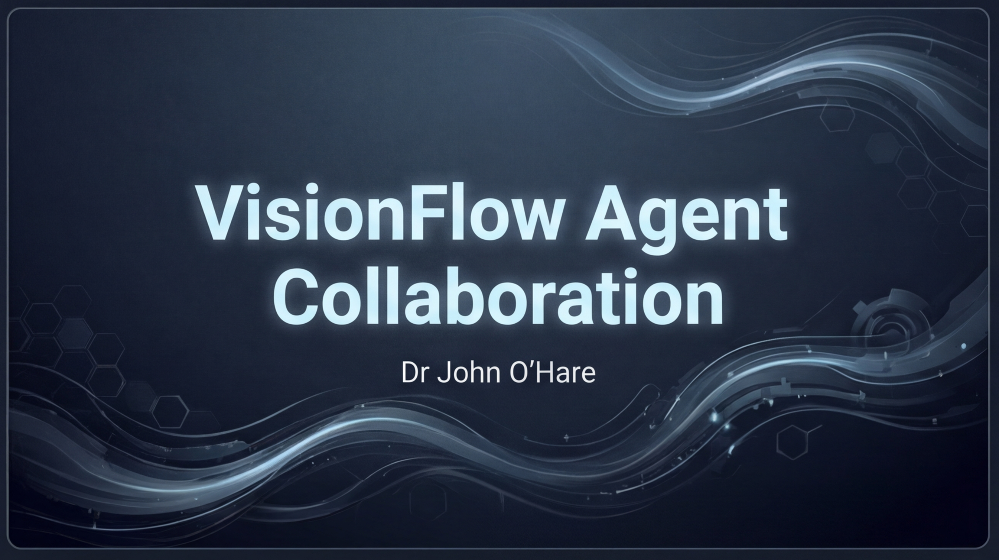
The Problem: AI Is Making Knowledge Work Harder
A third of the global workforce are knowledge workers
- INGEST - REASON - WRITE - VERIFY — the universal loop
- $5 Trillion market addressable by agentic systems
- 72% of enterprises plan to deploy AI agents by 2026 — but fewer than 10% have succeeded (Gartner)
Current AI tools might have an interface problem
- Chat windows. Terminals. Inline completions. Flat text everywhere. Nobody seems to have insight yet as to how to fix this.
- 62% of workers report burnout from AI-augmented workflows
“AI introduced a new rhythm in which workers managed several active threads at once: manually writing code while AI generated an alternative version, running multiple agents in parallel, or reviving long-deferred tasks because AI could ‘handle them’ in the background. They did this, in part, because they felt they had a ‘partner’ that could help them move through their workload. While this sense of having a ‘partner’ enabled a feeling of momentum, the reality was a continual switching of attention, frequent checking of AI outputs, and a growing number of open tasks. This created cognitive load and a sense of always juggling, even as the work felt productive.”
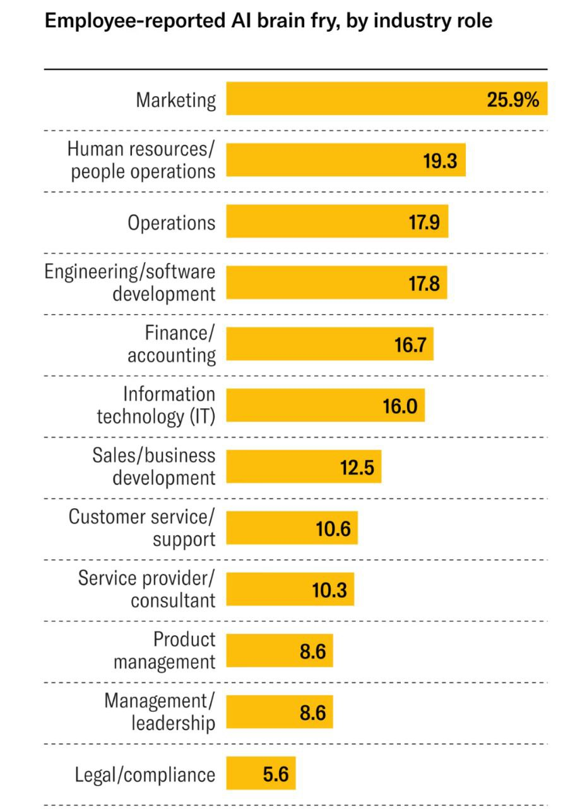
Agentic Engineering: How VisionFlow was Built
Claude Code is already 4% of all public GitHub commits — 135,000+ per day
- Projected to reach 20%+ of all daily commits by end of 2026
- Anthropic hit $1B annualised revenue in six months, faster than ChatGPT
VisionFlow is built with and for this paradigm
- Multi-agent Docker container with 5 AI personas (Claude, Gemini, OpenAI, Z.AI, DeepSeek) under supervisord
- 101 agent skills from architecture design to Blender scenes to hardware schematics
- Agentic development is not a feature, it’s the foundation
- 930+ source files, 18 months of continuous agentic engineering
What is VisionFlow / IRIS?
Powerful and secure collaborative agent orchestration platform

VisionFlow rendering a live ontology fashion & garment domain
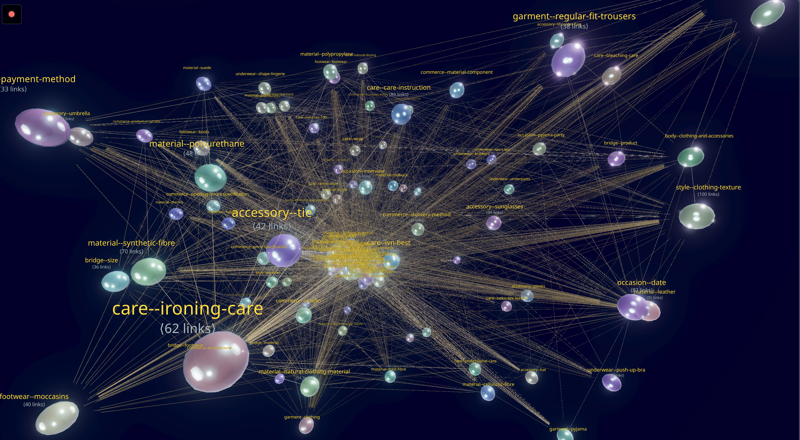
- Thousands of nodes laid out by semantic physics — hierarchy, disjointness, and equivalence rendered as physical forces in real time
Ontology-Driven Semantic Physics
Why ontologies matter for AI agents
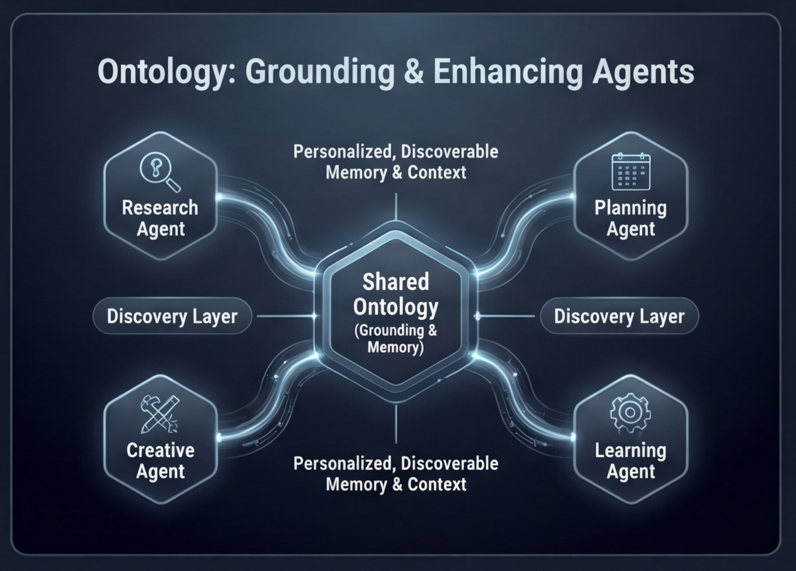
- Ontologies boost LLM performance: +55% fact recall, +40% correctness, 4.2x accuracy on schema queries (EMNLP 2025, data.world 2024)
Axiom-to-Force Translation — the core idea
- Formal ontology axioms interpreted as physical forces in a GPU simulation
| OWL Axiom | Physical Force | Visual Result |
|---|---|---|
SubClassOf(A, B) | Spring attraction (Hooke’s law) | Hierarchies form concentric shells |
DisjointWith(A, B) | Coulomb repulsion | Contradictions create visible gaps |
EquivalentClasses(A, B) | Strong spring (near-zero rest length) | Synonyms merge |
| Inferred axioms | Same laws at 0.3x strength | Prevents over-determination |
- You can see the shape of knowledge — without reading a single label
- Academic citations
- OG-RAG (EMNLP 2025): Ontology-grounded RAG improves fact recall by 55%, response correctness by 40%. aclanthology
- GenAI Benchmark II (data.world, 2024): Knowledge graphs with ontology-based query checks yield 4.2x higher LLM response accuracy. data.world
- OntoRAG (OpenReview): Enhances RAG by retrieving taxonomical knowledge from ontologies, suppressing hallucinations. openreview
- GPU implementation detail
- 11 CUDA
.cufiles, 6,400+ lines, 28__global__kernels - Grid-accelerated N-body: spatial hash grid reduces O(N^2) to O(N * avg_neighbours)
- Structure-of-Arrays memory layout for maximum GPU coalescing
- Stability detection via parallel kinetic energy reduction — physics pauses when equilibrium reached
- Whelk-rs: OWL 2 EL reasoner, <2s on 900+ classes, 90x LRU cache speedup
- 11 CUDA
Semantic Physics to Visualise Meaning
Axiom-driven forces create spatial structure you can read
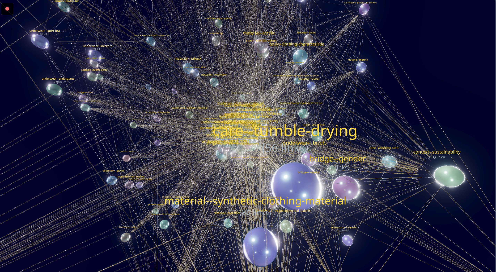
- Clusters form naturally from the ontology — no manual layout, no configuration — the shape is the meaning
Super Smooth Rendering - Precise Agent Control
Teams of humans, and teams of agents, in more natural spaces
- Transforms static documents into living knowledge ecosystems
- Ingests ontologies from Logseq notebooks via GitHub, reasons over them with OWL 2 EL inference, renders as interactive 3D graph with semantic physics
- Agents continuously analyse the graph, propose new knowledge via GitHub PRs, and respond to voice commands
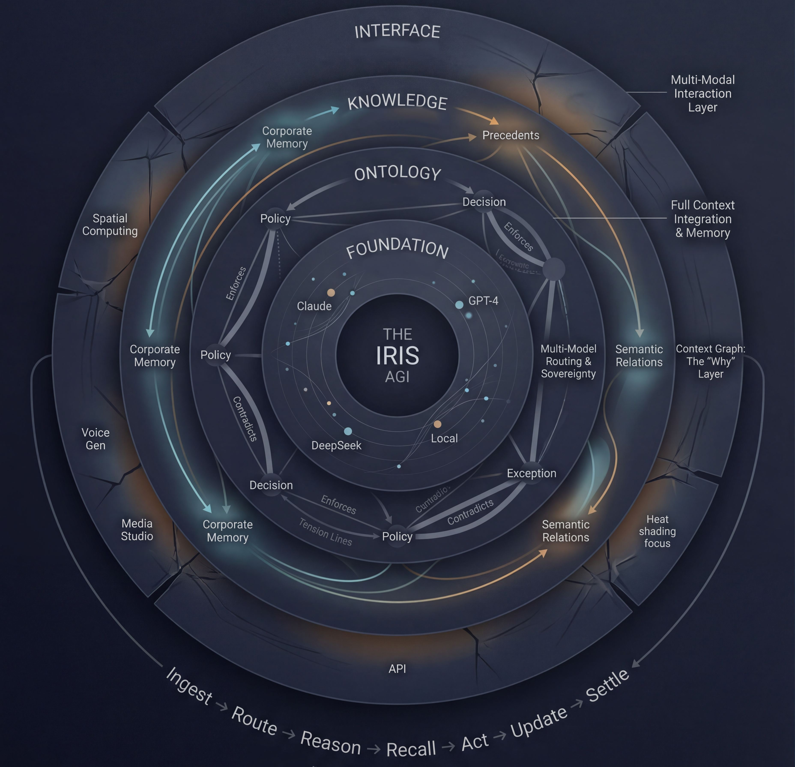
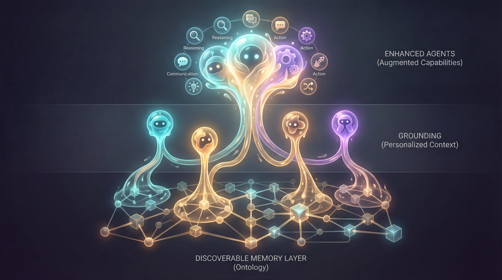
Case Study: Creative Sprint at THG Ingenuity Studios
World Record for Longest AI Assisted Catwalk
- {{video https://youtu.be/ZuaFrZ-yUj4}}
From a standing start — 3 hours, on-site, zero preparation
-
No pre-built workflows. No pre-existing assets, except this one image
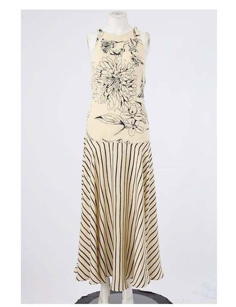
-
Provided screenshots of an existing workflow, then gave IRIS voice instructions. Everything autonomously produced.
-
The human creative director never opened ComfyUI, Photoshop, or any creative application
-
All workflows generated from scratch by AI agents
- Full report
- Full report
Case Study: The Results
| Metric | Traditional Baseline | IRIS System | Multiplier |
|---|---|---|---|
| Per-image generation | 15 min | ~1 min | 15x faster |
| Full campaign (36 assets) | ~4 hours | 30 min | 8x faster |
| Extended campaign (138 assets) | ~15+ hours | ~96 min | ~9.4x faster |
| Pipeline construction | 4 hours (manual) | 0 hours (autonomous) | Eliminated |
| Human input required | Continuous expert operation | 21 voice prompts (~5 min) | 1:19 ratio |
| Creative concepts | 6-8 per session | 45+ variations | 5.6x more |
- Pipeline construction: eliminated. The agents built the ComfyUI workflows, configured multi-GPU rendering, integrated APIs, ran QA — all autonomously.
21 voice prompts. 138 assets. That’s the ratio.
Media Co-Creation: What Agents Can Make
ComfyUI — autonomous creative pipelines
- Agents build, test, and run ComfyUI workflows without human intervention
- Multi-GPU pipeline configuration, API integration, quality assurance — all agentic
ANYTHING YOU CAN DO IN COMFYUI !!
Physically Based Textures from BIM (Revit)

Blender MCP — headless 3D creation via voice
First Blender test — headless container, returned the PNG
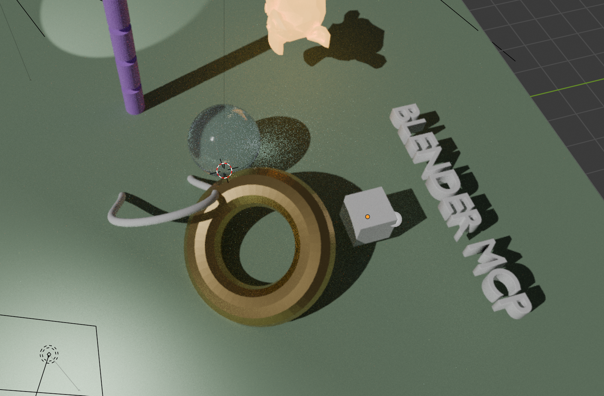
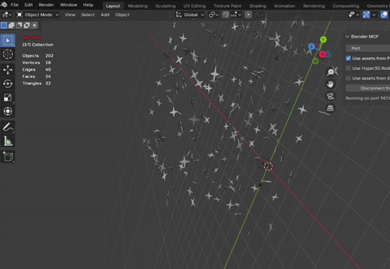
- “Connect to the Blender MCP and create me a swarm of shuriken with flocking behaviour. Use neural enhancements to test the swarming code using algorithmic breeding, then convert to Python for the remote MCP. Make 200 shuriken items black glass, each spinning on its central axis.”
A modern interpretation of Hypnerotomachia Poliphili (1499)
- Task(Initialize Hive Mind) ☐ Initialize Blender project with proper scene settings and units (feet) ☐ Create base terrain: Valley with sheer mountain cliffs using displacement ☐ Model Great Pyramidal Gate base plynth (1536ft x 1536ft x 35ft) ☐ Create pyramid body with 1410 parametric steps and internal staircase ☐ Configure dreamlike lighting with low perpetual sun and dramatic shadows ☐ Design kinetic bio-mechanical Medusa iris entrance system ☐ Apply white engineered surface material with fiber-optic seams to pyramid ☐ Create checkered marble courtyard floor (vast geometric grid) ☐ Model colossal winged horse in Corten steel/carbon fiber composite ☐ Create hollow elephant with terrazzo material and gold/silver flakes ☐ Build interactive 64-square chessboard with light panels (24ft x 24ft) ☐ Design elephant interior with sepulcher and royal statues ☐ Generate parametric golden lattice canopy structure ☐ Create kinetic Three Graces fountain with multi-tiered water system ☐ Arrange all assets in proper spatial relationships and optimize scene
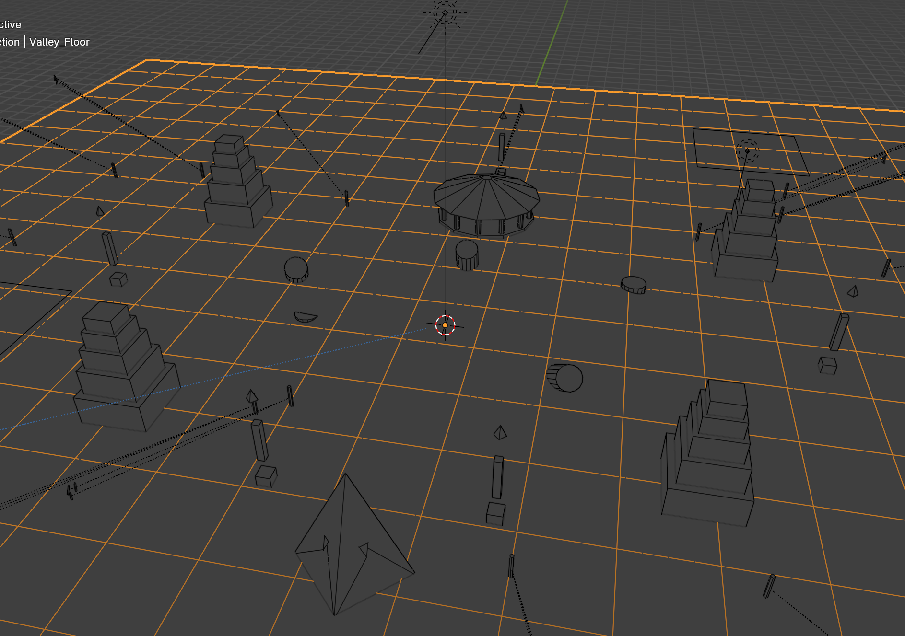
More Things It Has Made
”Make me a pre-amp” — KiCad + ngspice via MCP
- “A preamp with a bit of character, not too expensive, nothing too flashy”
- 500-series “Character Toolbox” mic preamp — OPA1612, transformer saturation, JFET harmonics
- 32 components, $102 BOM, 95% production-ready — from a single voice prompt
- Pre-amp BOM detail
- Component cost: 162.20 | Target price: $399-499 | Margin: 47.6-67.5%
- 3x Cinemag CMMI-8-PCA transformers, OPA1612 dual op-amp, 2N5457 JFET, professional XLR connectors
- MCP tools used: kicad.create_project, kicad.netlist_extraction, kicad.circuit_pattern_recognition, kicad.run_drc, kicad.generate_bom
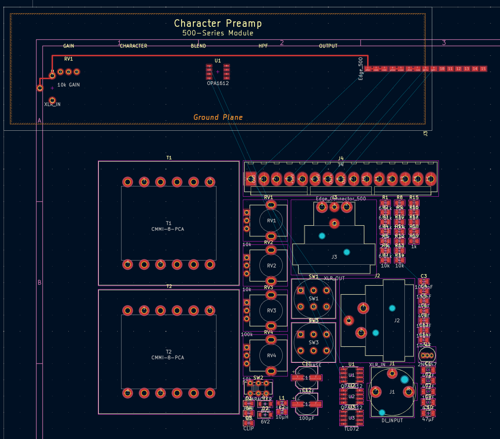
Company website — auto-pushed to GitHub Pages
- DreamLab AI Consulting Ltd. — agents designed, built, and deployed it
CAVE System Quote — 300 pages in 4 hours
- Three-tier immersive system quote with HVAC specs, team selection, branding
- Selected team and branding guidelines autonomously from the DreamLab website
- CAVE quote detail
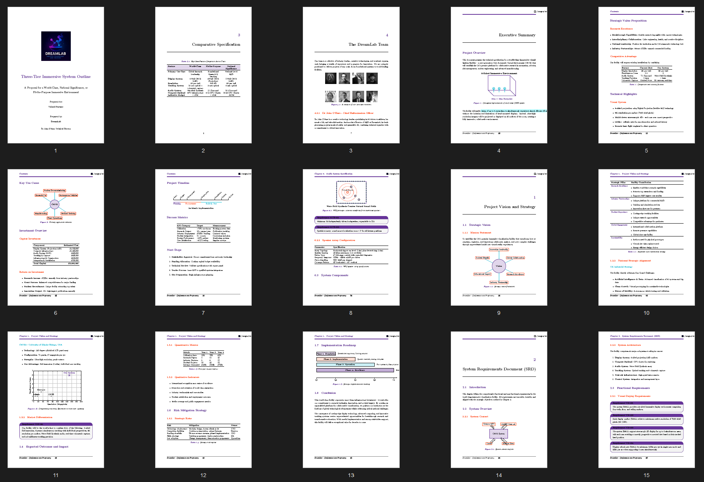
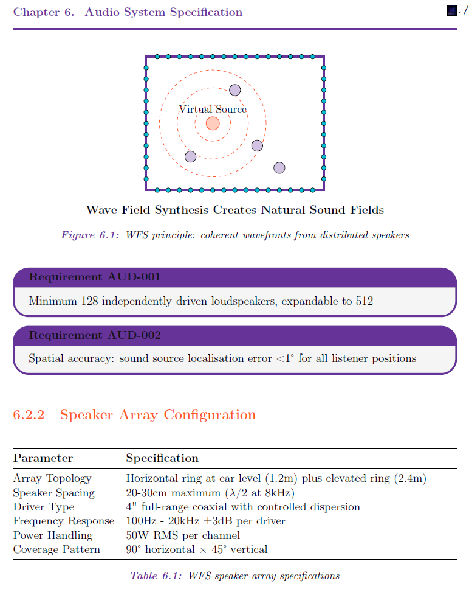
Industry reports — agents author formal documents autonomously
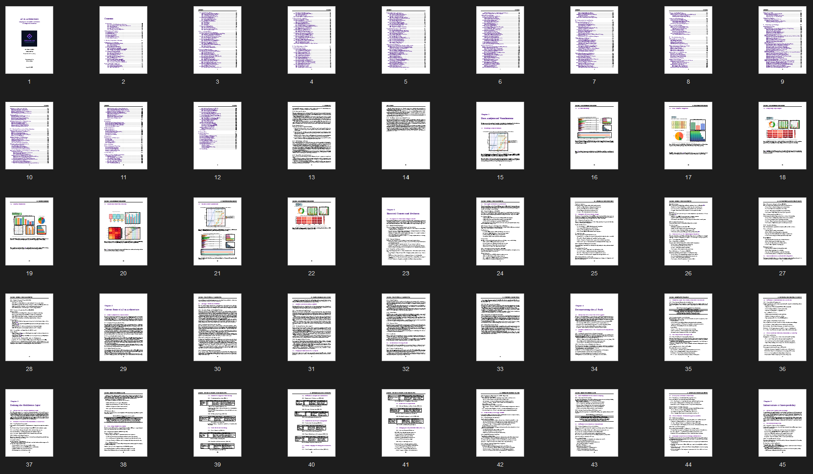
Capabilities
5-Tier Memory Architecture
| Tier | Technology | Purpose |
|---|---|---|
| Ontology | OWL 2 EL + Whelk-rs | Semantic reasoning, inference |
| Knowledge Graph | Neo4j 5.13 | Structured relationships, Cypher queries |
| Vector Memory | Qdrant | Semantic similarity search |
| Document RAG | GraphRAG / RAGFlow | Thousands of documents and books |
| Session Memory | Per-project agent context | Task continuity across sessions |
- GitHub markdown (human-readable) as the single source of truth baseline
101 Agent Skills across 8 domains
- AI & Reasoning | Development & Quality | Agent Orchestration | Knowledge & Ontology | Creative & Media | Infrastructure | Document Processing | Architecture
Voice Interaction — 4-plane spatial audio model
-
Private command (PTT) → Agent response (spatial) → Public voice (LiveKit SFU) → Public agent (spatial)
-
<500ms command acknowledgement | Opus 48kHz | HRTF spatial panning | Unique voice per agent
-
Agent skills list
- AI & Reasoning:
deepseek-reasoningperplexityperplexity-researchpytorch-mlreasoningbank-intelligence - Development & Quality:
build-with-qualityrust-developmentpair-programmingagentic-qegithub-code-review - Agent Orchestration:
hive-mind-advancedswarm-advancedswarm-orchestrationflow-nexus-neuralagentic-lightning - Knowledge & Ontology:
ontology-coreontology-enrichimport-to-ontologylogseq-formatteddocs-alignment - Creative & Media:
blendercomfyuicomfyui-3dcanvas-designffmpeg-processingalgorithmic-art - Infrastructure:
docker-managerdocker-orchestratorkubernetes-opslinux-admininfrastructure-manager - Document Processing:
latex-documentsdocxxlsxpptxpdftext-processing - Architecture:
sparc-methodologyprd2buildwardley-mapsmcp-builderv3-ddd-architecture
- AI & Reasoning:
-
MCP ontology tools
- 7 tools exposed via Model Context Protocol for AI agent read/write access to the knowledge graph:
Tool Purpose ontology_discoverSemantic keyword search with Whelk inference expansion ontology_readEnriched note with axioms, relationships, schema context ontology_queryValidated Cypher execution with schema-aware label checking ontology_traverseBFS graph traversal from starting IRI ontology_proposeCreate/amend notes - consistency check - GitHub PR ontology_validateAxiom consistency check against Whelk reasoner ontology_statusService health and statistics - The Loop: Agent discovers - reads enriched context - proposes amendment - Whelk consistency check - GitHub PR - human review - merge - auto-sync - Whelk re-reasons - GPU re-layouts
-
Voice architecture
Plane Direction Scope Trigger 1 User mic - turbo-whisper STT - Agent Private PTT held 2 Agent - Kokoro TTS - User ear Private Agent responds 3 User mic - LiveKit SFU - All users Public (spatial) PTT released 4 Agent TTS - LiveKit - All users Public (spatial) Agent configured public - Latency budget: STT 300ms + parse 1ms + agent 50ms + ACK 5ms = 410ms measured
Architecture
| Layer | Technology | Detail |
|---|---|---|
| Backend | Rust 1.75+, Actix-web | 373 files, 168K LOC, hexagonal architecture |
| Frontend | React 19, Three.js, R3F | 377 files, 26K LOC, TypeScript 5.9 |
| Graph DB | Neo4j 5.13 | Cypher queries, bolt protocol |
| GPU | CUDA 12.4 | 28 kernels, 6,400+ lines across 11 files |
| Ontology | OWL 2 EL, Whelk-rs | EL++ subsumption, consistency checking |
| XR | WebXR, @react-three/xr | Meta Quest 3, hand tracking |
| Multi-User | Vircadia World Server | Avatar sync, spatial audio, entity CRUD |
| Voice | LiveKit SFU | turbo-whisper STT, Kokoro TTS, Opus codec |
| Protocol | Binary V3 | 21 bytes/node, delta encoding, 80% bandwidth reduction |
| Auth | Nostr NIP-07 | Browser extension signing, relay integration |
| Agents | MCP, Claude-Flow | 101 skills, 7 ontology tools, 5 AI backends |
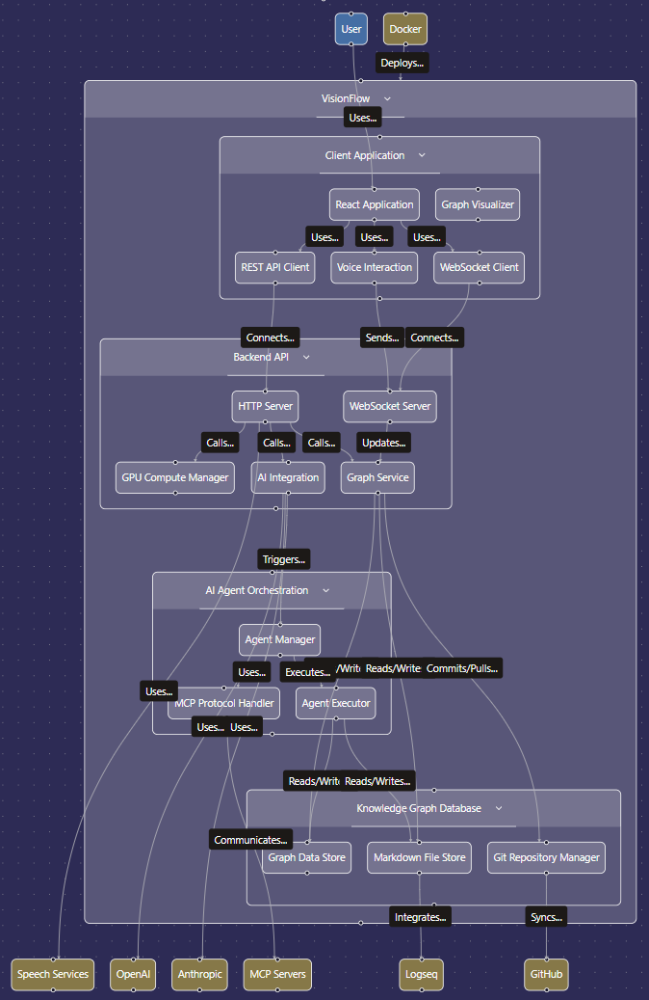
-
Performance benchmarks
Metric Result Max nodes at 60 FPS 180,000 (RTX 3080) GPU vs CPU speedup 55x WebSocket bandwidth reduction 80% (Binary V3 vs JSON) Concurrent users 250+ Ontology reasoning <2s cold, 22ms cached Voice command ACK 410ms measured Cold start to interactive ~5.5s -
Development timeline
Phase Period Milestone Prototype Aug 2024 Working nodes and edges in Three.js Rust rewrite Oct-Dec 2024 Actix actor system, Neo4j, hexagonal architecture GPU physics Jan-Mar 2025 CUDA force-directed layout, 55x speedup Ontology engine Apr-Jun 2025 Whelk-rs OWL 2 EL, axiom-to-force pipeline Multi-user + XR Jul-Sep 2025 Vircadia, WebXR Quest 3, spatial voice Agent tools Oct-Dec 2025 MCP ontology tools, GitHub PR loop, 101 skills IRIS studio Jan-Feb 2026 Immersive configuration, settings hardening
Open Source and Why It Matters
This isn’t a product pitch — the software is free and open source
- DreamLab-AI/VisionFlow — MPL 2.0 licence
Why I built it
- My knowledge base moves with the evolving edge of the agentic technology stack
- It’s unbounded by frameworks which age quickly in this moment
- I get value from the development process, the tooling, and the knowledge management
- This informs my teaching, consulting, and training
Why it matters for you
- The 80/10 gap is real: 80% of enterprises want multi-agent orchestration, fewer than 10% have achieved it
- Current tools lack the structural foundation to coordinate agents meaningfully
- Ontology-grounded spatial workspaces provide that foundation
- Other people decide what to do with the cheat codes I have assembled
What you can do with it
- Media co-creation — Blender, ComfyUI, creative pipelines via voice
- Knowledge management — structured, reasoned, auditable
- Agent orchestration — 101 skills, 5 AI backends, spatial coordination
- Training platform — learn agentic development by using it
Where to find out more…
-
Open source author: Disruption and Convergence Book (2022, arXiv)
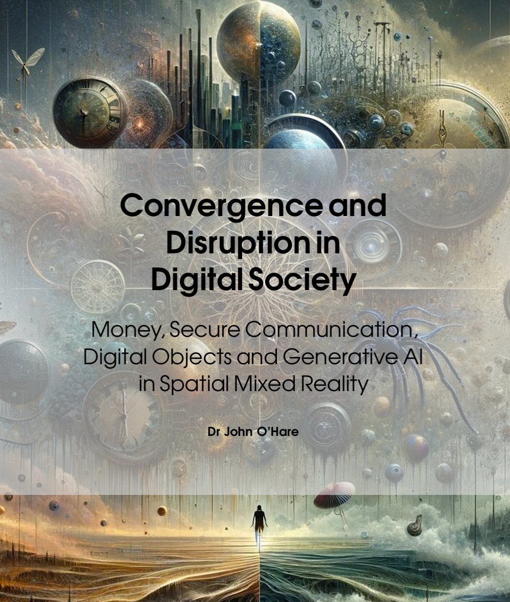
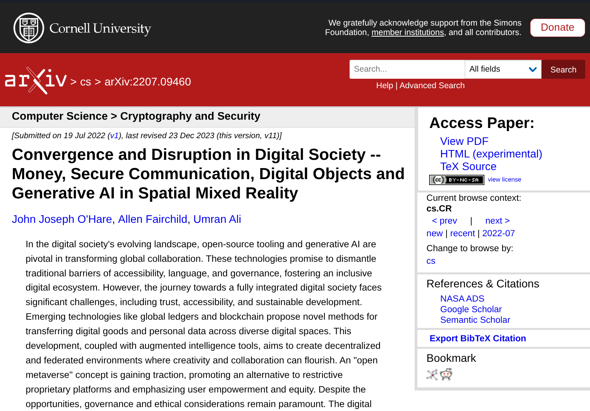
About Me
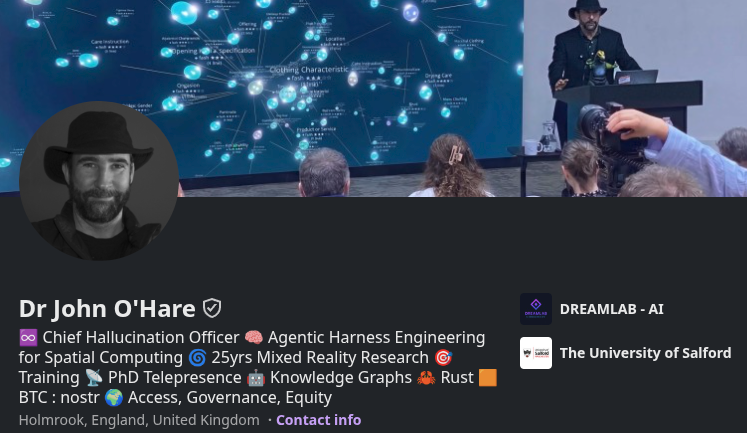
Link to original
Core Offering
<<<<<<< HEAD:workingGraph/pages/Visionflow default presentation.md
- DreamLab AI Consulting Ltd. Bespoke Product, agentic AI research, consulting and residential training.
=======
- DreamLab AI Consulting Ltd. Bespoke Product, agentic AI research, consultant & trainer
96bfccd33e14f89defe28b7ea96cad1e212cf040:workingGraph/pages/AI Symposium Presentation.md
Links and Resources
Source Code
- GitHub: DreamLab-AI/VisionFlow — Open source, MPL 2.0
Live Demos
- Ontology Explorer — Interactive 2D knowledge graph
- DreamLab AI — Company website (agent-built)
References
- The Original Book (2022) — Where it all started
- HBR: AI Doesn’t Reduce Work — The interface problem
- SemiAnalysis: Claude Code Inflection — Agentic development market
- OG-RAG Paper (EMNLP 2025) — Ontology performance evidence
- Videos